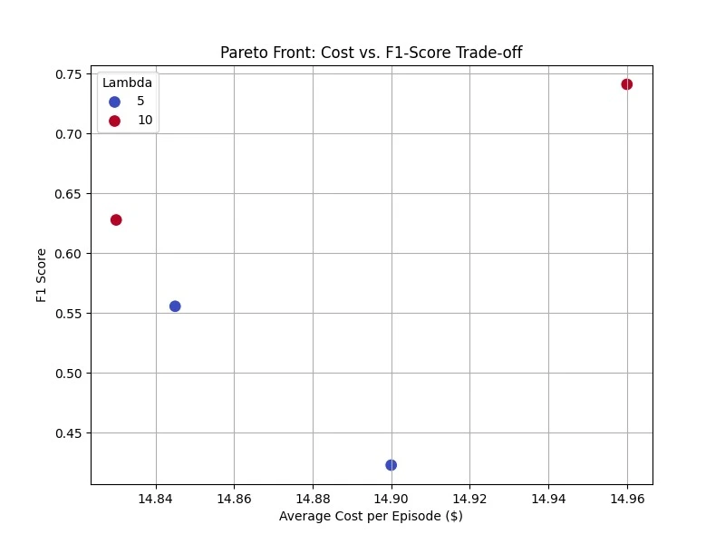
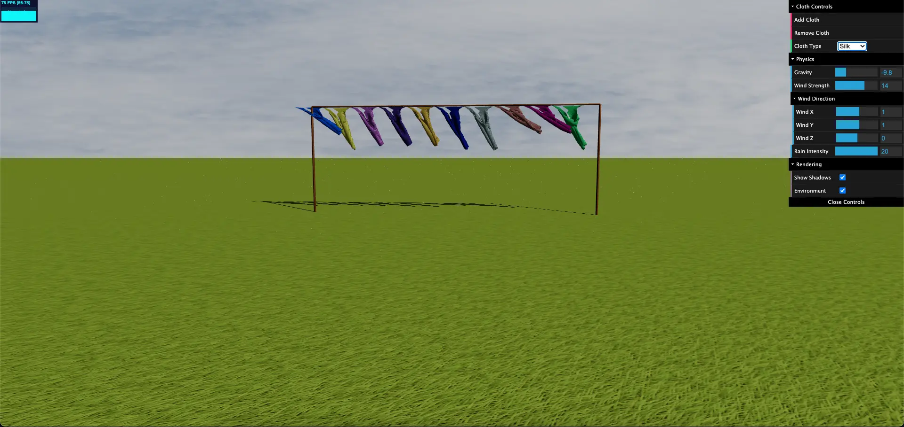
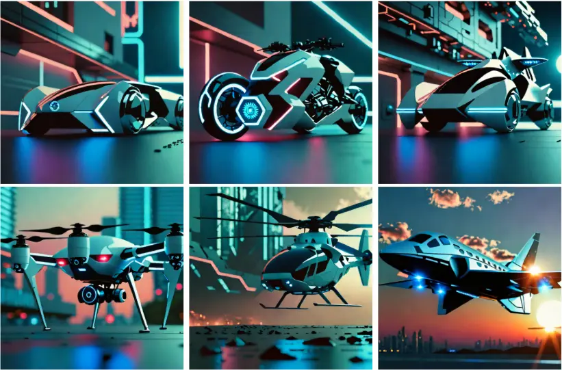
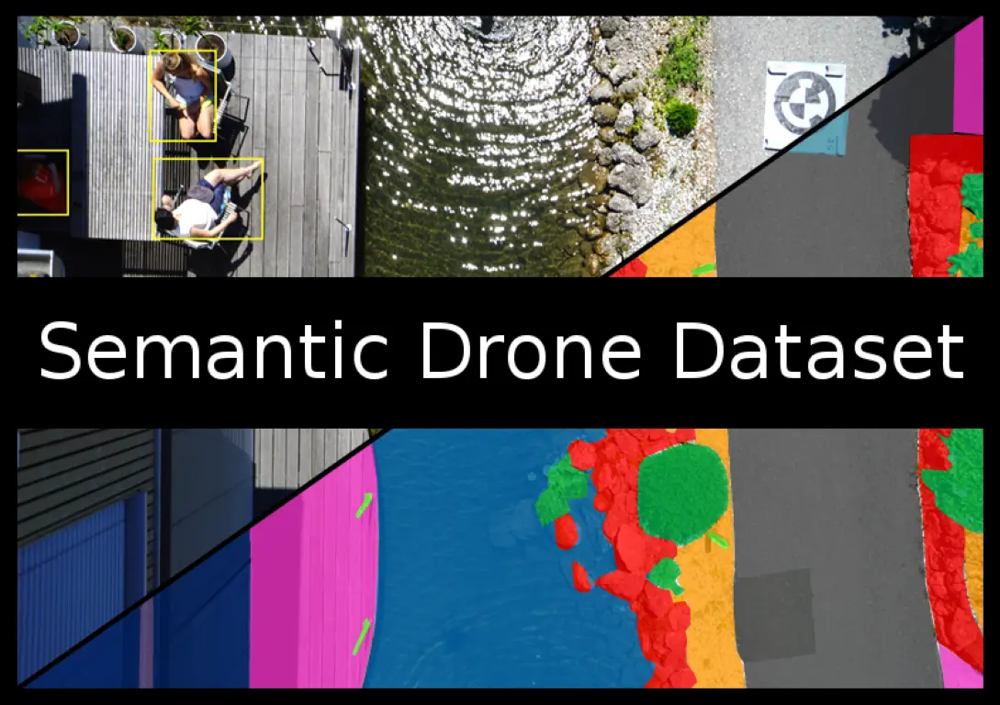

My Projects

Leveraging Reinforcement Learning for Cost-Effective Medical Diagnostics
RL methods to balance medical testing budgets and prediction accuracy by identifying Pareto-optimal policies.
View Project on GitHub

Mass-Spring Cloth Simulator
A 3D simulator of cloth-like materials physics using a mass-spring model.
View Project on GitHub

Style Aligned Image Generation via Shared Attention
Innovative image generation by aligning styles using shared attention mechanisms.
View Project on GitHub
Adversarial Natural LAnguage Inferenece
Natural Language Inference (NLI) using transformer-based models and data augmentation techniques.
View Project on GitHub

Semantic Segmentation of Drone Aerial Images
Semantic segmentation of drone imagery using various computer vision techniques.
View Project on GitHub